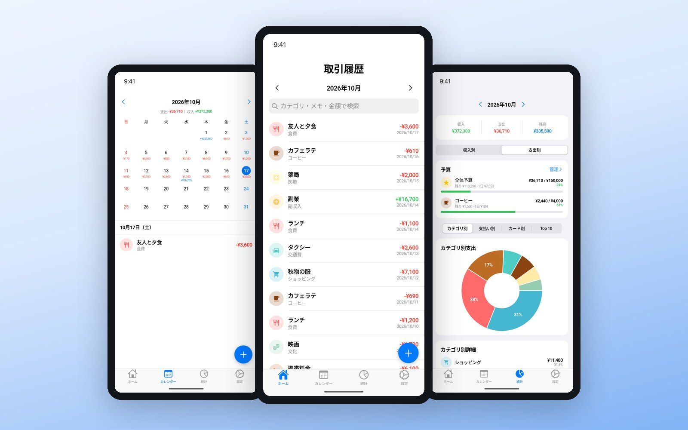
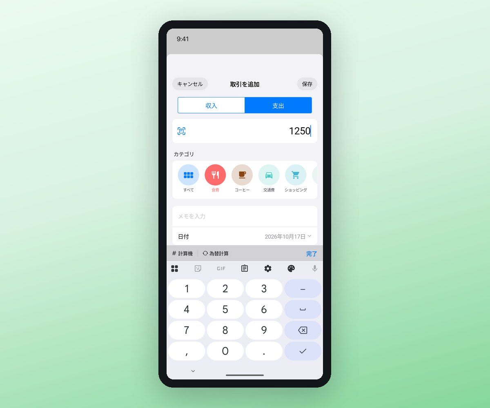
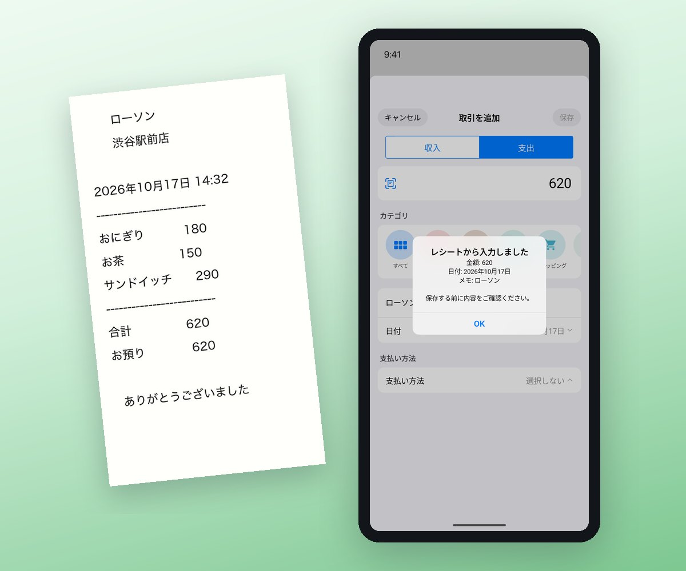
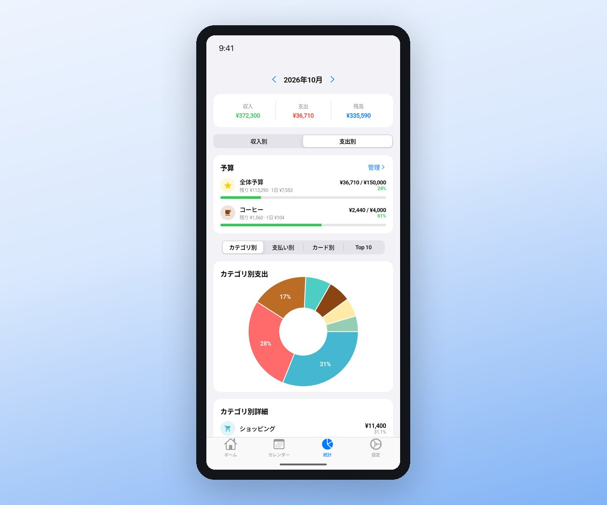
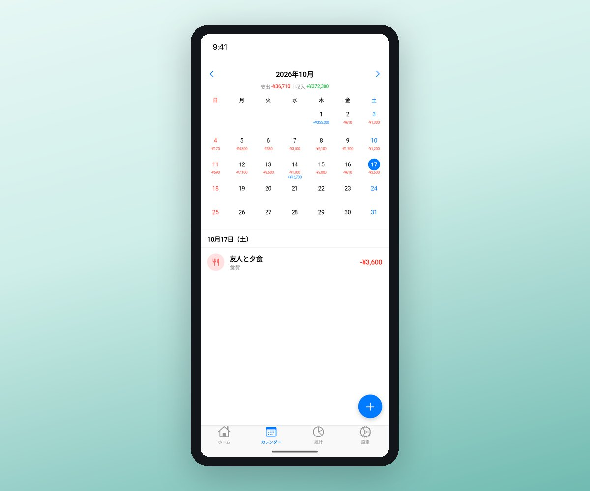
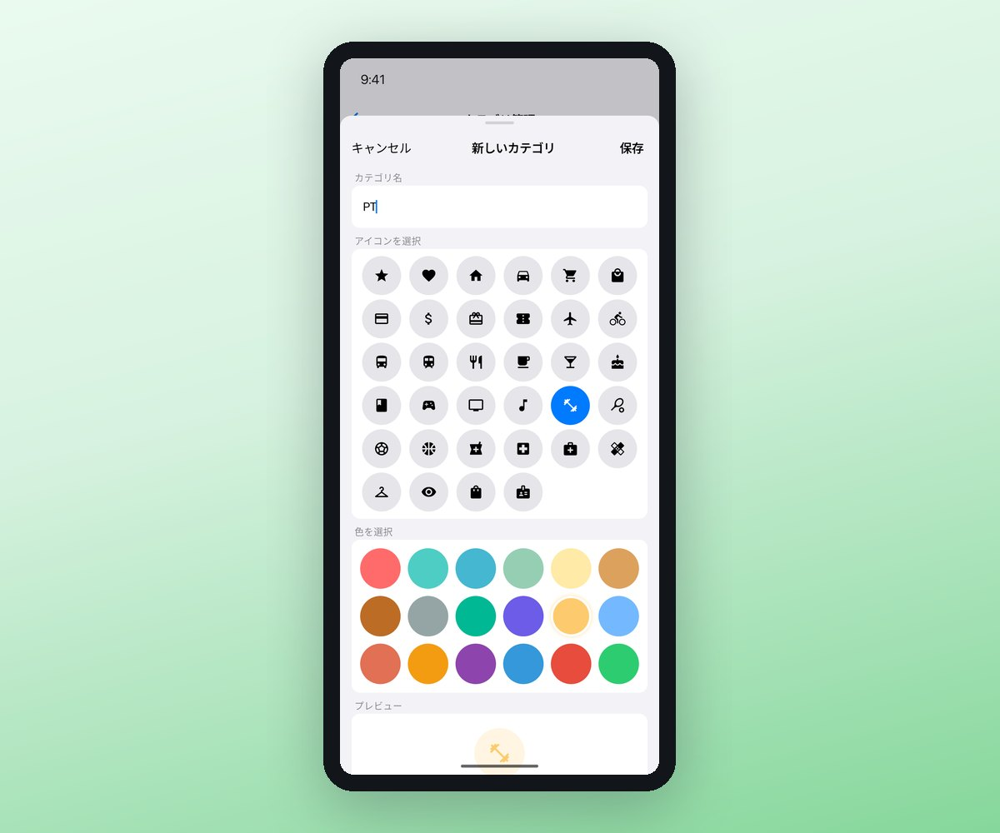
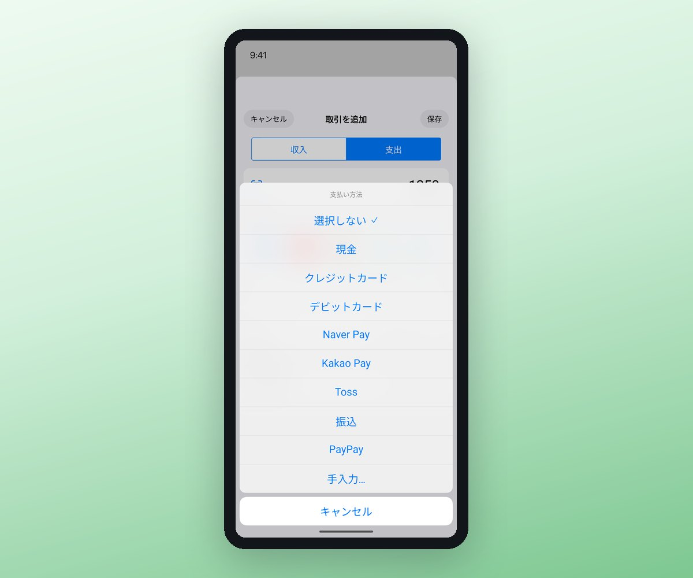
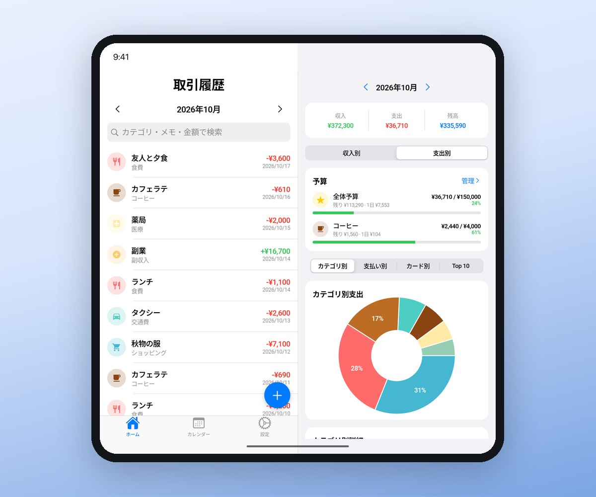

日付・金額・カテゴリーをタップすれば記録完了。レシートは撮るだけで入力され、統計とカレンダーで今月のお金の行き先が分かります。登録も口座連携もなく、記録はスマホの中だけに残ります。


日付、金額、カテゴリー、支払い方法。金額欄に電卓と為替計算機が付いているので、割り勘も外貨の支払いもその場で整理できます。

写真を撮るかアルバムから選ぶと、金額・日付・店名を読み取って入力します。保存前に確認するだけです。

カテゴリー別・支払い方法別・カード別のドーナツグラフと、よく使った項目Top 10。今月全体やカテゴリーごとに予算を決めると、残りの金額と1日に使える金額まで分かります。

カレンダーの日付の下に、その日の収入と支出が表示されます。日付をタップするとその日の記録だけを表示します。

アイコンと色を選んで、自分だけのカテゴリーを作れます。基本カテゴリーは出発点。使い方に合わせて増やしていけます。

一覧にない支払い方法やカード会社は、名前を手入力するだけ。一度入力した名前は次回から一覧に表示されます。

開いた折りたたみスマホ、iPhone Duo、タブレットでは、左に取引履歴、右に統計を並べて表示します。片方で月を変えるともう片方も合わせて変わります。
こんな方に
支払い方法やカード、メモまで一件ずつ残したいなら。
カテゴリー別のドーナツとTop 10で、何に多く使っているかすぐ分かります。
入力は4回のタップ、レシートは写真1枚。だから続きます。
外貨で払っても、その日のレートで基準通貨に換算して記録します。
今月とカテゴリーごとの上限、残りの金額をいつでも確認できます。
アカウントも銀行連携もなし。記録はスマホの中だけに。
大きな画面では履歴と統計を一画面に並べて見られます。
プライバシー
記録をひも付けるアカウントも、送り先のサーバーもありません。すべての取引は端末内のデータベースにあり、アプリを削除すると一緒に消えます。レシート写真も端末内だけで読み取り、保存しません。アプリの外に出るのは、為替レートを問い合わせるときの通貨コード、レシート読み取り（Google ML Kit）が診断用に送る端末の機種やアプリのバージョンなどの情報、そして無料アプリのバナー広告のためにGoogle AdMobが収集する広告IDと端末情報です。詳しくはプライバシーポリシーに記載しています。
App StoreとGoogle Playで無料です。オフラインで動作し、ネットワークは広告と為替レートにしか使いません。